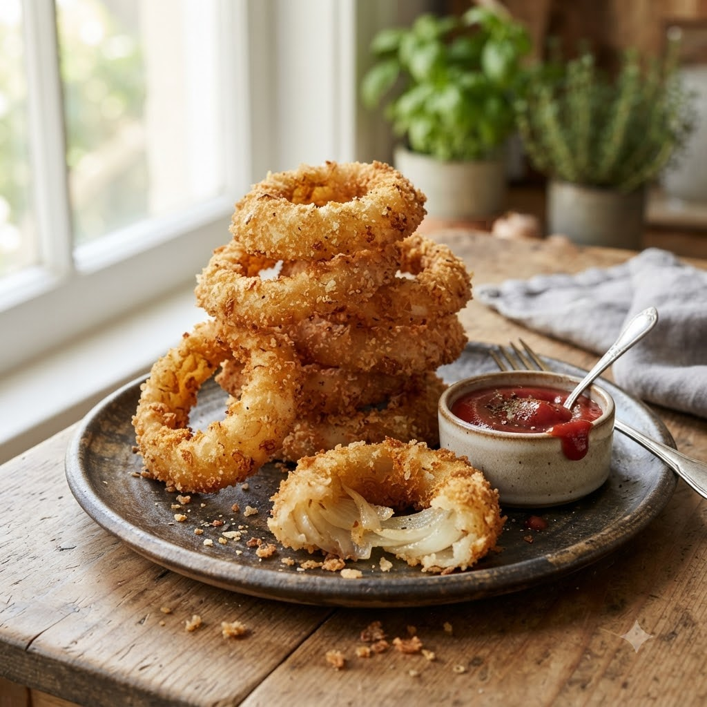

Crispy Onion Rings

Crispy Onion Rings
Airfryer – Fry 190°C 11 min — Serves 4
Prep ahead: Soak sliced onions in cold water 10 minutes to mellow the bite before battering.
Ingredients
- 2 large onions, sliced into rings
- 1/2 cup flour
- 1/2 tsp baking powder
- 1/2 cup milk
- 1 cup breadcrumbs or panko
- Salt & pepper to taste
- Oil spray
Method
1Preheat: Preheat the Airfryer to 190°C for 4 minutes before adding the food to the basket.
2Whisk flour, baking powder, milk, salt and pepper into a smooth batter.
3Dip onion rings in the batter, then coat well in breadcrumbs.
4Spray with oil and arrange in the basket in a single layer.
5Air-fry at 190°C for 11 minutes, flipping halfway, until golden and crisp.